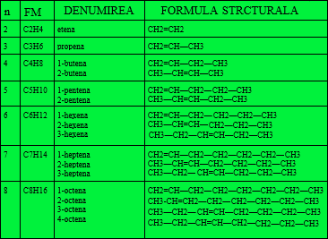

Alchenele sunt hidrocarburi nesaturate aciclice care conțin doar o legătură dublă între doi atomi de carbon și au formula generală CnH2n, unde n reprezintă numărul atomilor de carbon.
Daca îi dăm valori lui n se obține seria omoloagă a alchenelor în care fiecare termen are câte o grupare CH2 în plus față de precedentul său.

RADICALI:
CH2 = CH — VINIL etenil CH2=CH—CH2— ALIL
a d
C = C a diferit de e și b diferit de d
b e
| |
C=C+x—y ———» —C—C—
| |
substanța nesaturată substanța saturată
H H H H
| | Ni | |
C = C + H — H ————» H— C — C —H
| | | |
H H H H
Ni
CH2 = CH2 + H2 ———» CH3 — CH3
Ni
CH2 = CH — CH3 + H2 ———»CH3 — CH2 — CH3 (propan)
Adiția hidrogenului la alchene se face în prezența catalizatorului nichel (Ni) .
CCl4
CH2 = CH2 + Cl2 ———» CH2 — CH2 1,2-dicloroetan
| |
Cl Cl
CCl4
CH2 = CH — CH3 + Br2 ———» CH2 — CH — CH3 1,2-dibromopropan
| |
Br Br
CH2 = CH2 — HCl ————» CH3 — CH2 -clorura de etil
I -kelen
Cl -cloroetan
CH2 = CH — CH3 + HBr ———» CH3 — CH — CH3 -2-bromopropan
I -bromura de izopropil
Br
H+
CH2 = CH2 + H — CH ———» CH3 — CH2
|
CH
H+
CH2 = CH — CH3 + H — OH ———» CH3 — CH—CH3
|
OH
CnH2n + 3n/2 O2 = nCO2 + nH2O + Q
C2H4 + 3O2 = 2CO2 + 2H2O + Q
C3H6 + 9/2 O2 = 3CO2 + 3H2O + Q
CH2 != ———» CO2 + H2O
R — CH != ———» RCOOH
R — C != ———» R — C —R”
|| ||
R” O
polimelizare
n A ————————» —(A)—n
monomer polimer
n-gradul de polimerizare
A-monomer
polimerizare
nCH2 = CH2 ———————» -(CH2—CH2)-n polietenă